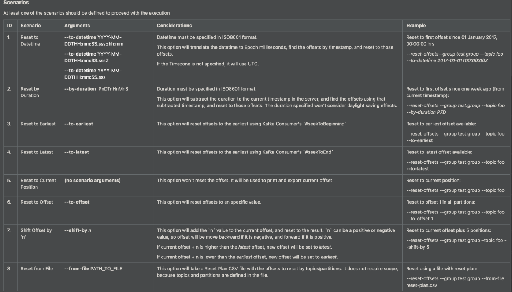

Resetting Kafka Offsets
All options are as follows:

Command examples are as follows:
bin/kafka-consumer-groups.sh
--bootstrap-server kafka_1:9092,kafka_2:9092,kafka_3:9092,kafka_4:9092,kafka_5:9092
--group group_name
--reset-offsets --topic topic_name
--to-datetime 2022-04-25T12:00:00.000
--execute